Escuela y liceo en un mismo lugar
El CEI Javier de Viana es un Centro Educativo Integrado. Reúne en un mismo centro a la Escuela Rural N.º 33 «Luis Artigas Gómez Núñez» y al Liceo Javier de Viana: acompaña a niñas, niños y estudiantes desde Inicial 3 hasta 1.º de Educación Media Superior.
Está sobre la Ruta 30, en el kilómetro 97,5, en Javier de Viana. El pueblo, a unos 33 kilómetros al oeste de la ciudad de Artigas, creció junto a la estación de tren «Tres Cruces», instalada en 1893. Su primera escuela abrió en 1901.
La escuela lleva el nombre del maestro Luis Artigas Gómez Núñez. La comunidad educativa celebró esa nominación con un acto de homenaje.
Educación Inicial y Primaria
- Desde Inicial 3, 4 y 5 años hasta 6.º año.
- Horario: de 8:00 a 13:00.
- Servicio de desayuno y almuerzo.
- Profesor de Educación Física.
- Servicio odontológico.
- Apoyo de la Fundación Gastesi Martinicorena.
Educación Media
- Desde 7.º año hasta 1.º de Educación Media Superior (EMS).
- Horario: de 9:50 a 18:00.
- Servicio de desayuno, almuerzo y merienda.
- Servicio de ómnibus.
- Servicio odontológico.
- Apoyo de la Fundación Gastesi Martinicorena.
- Profesor de Educación Física y talleres educativos.
- Horas de Acompañamiento.
- Club de Ajedrez.
- Laboratorio Ceilab.
Aulas abiertas
Las huertas, los invernáculos y los jardines del CEI son aulas al aire libre, guiadas por las AAM (Actividades Adaptadas al Medio). «Sembrando vida, cosechando futuro» es el lema de su proyecto productivo.
Te invitamos a conocer el CEI
- Es un centro educativo en funcionamiento: para visitarlo, coordiná antes con la institución.
- Teléfono: 4770 2828. Correo: ceijavierdeviana@gmail.com.
- ¡Te esperamos para crecer, aprender y compartir juntos!
Videos


Fotos
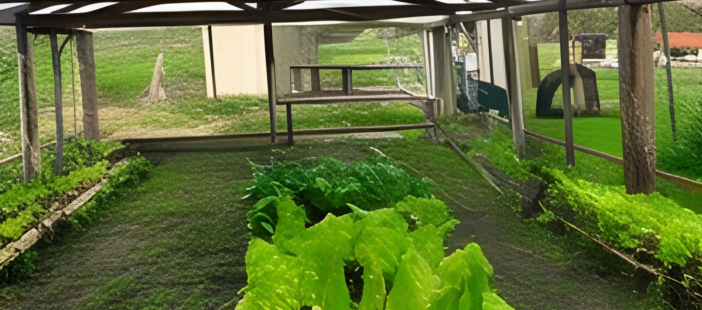
Foto: CEI Javier de Viana
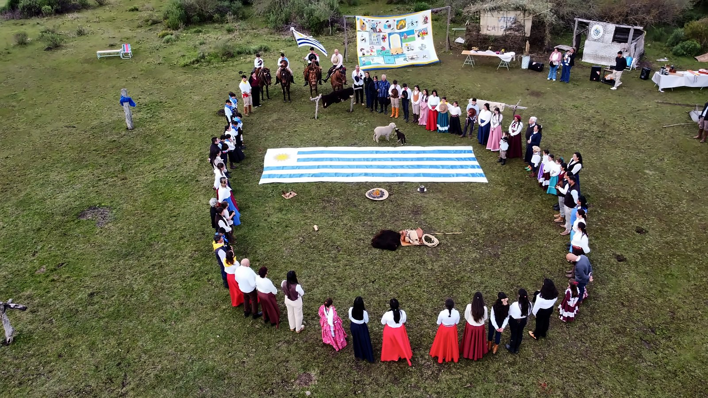
Foto: CEI Javier de Viana
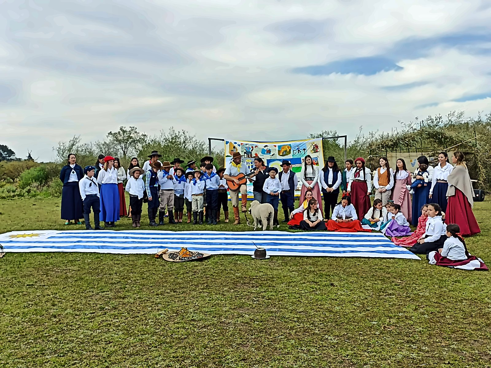
Foto: CEI Javier de Viana
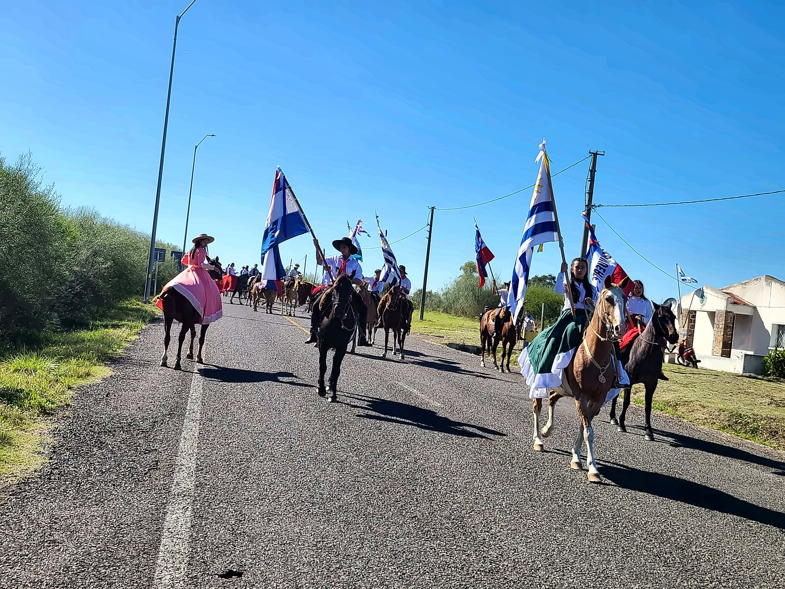
Foto: CEI Javier de Viana
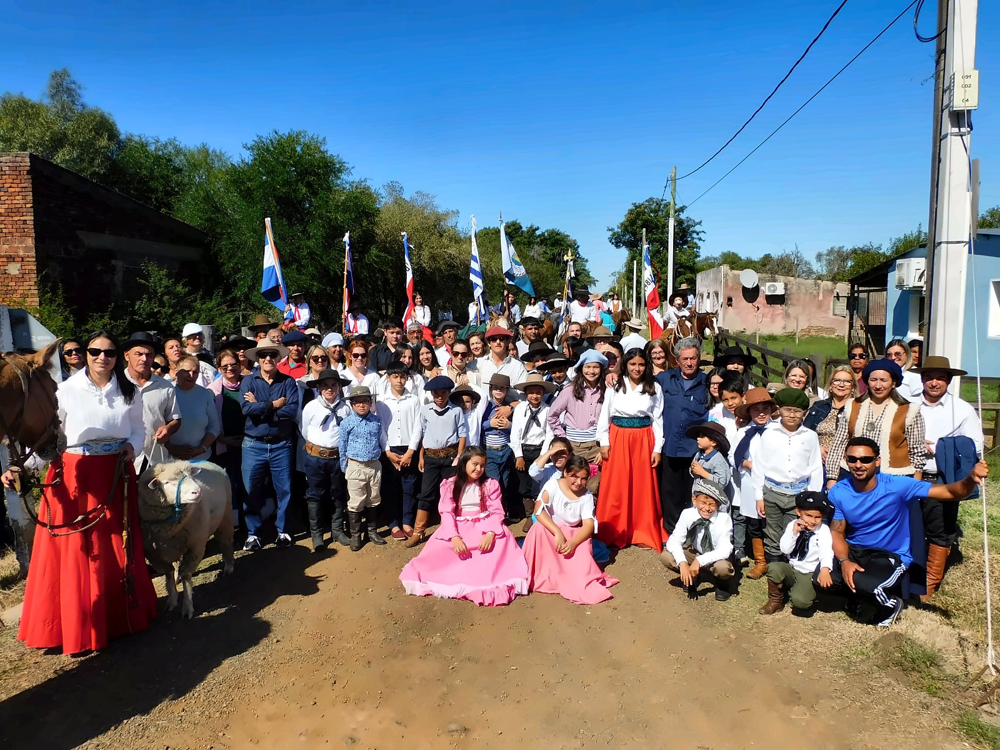
Foto: CEI Javier de Viana
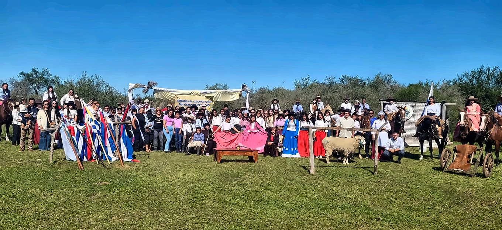
Foto: CEI Javier de Viana
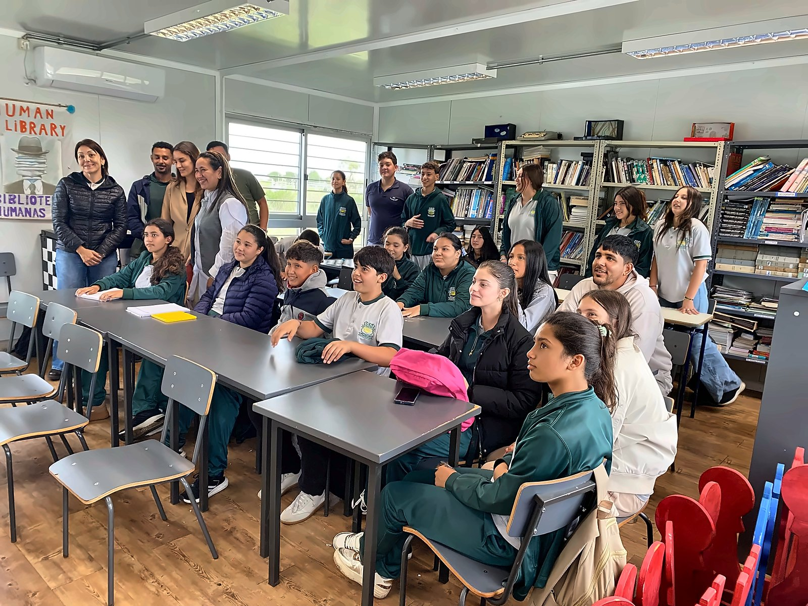
Foto: CEI Javier de Viana
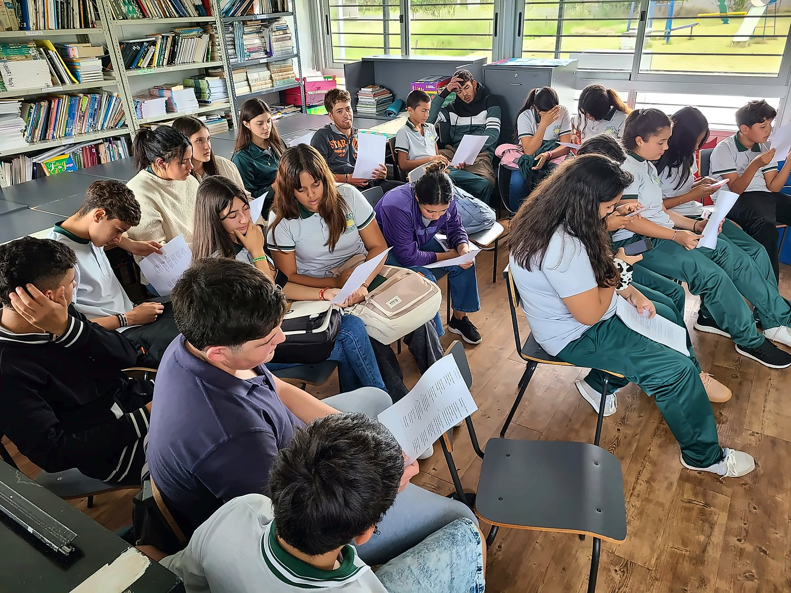
Foto: CEI Javier de Viana
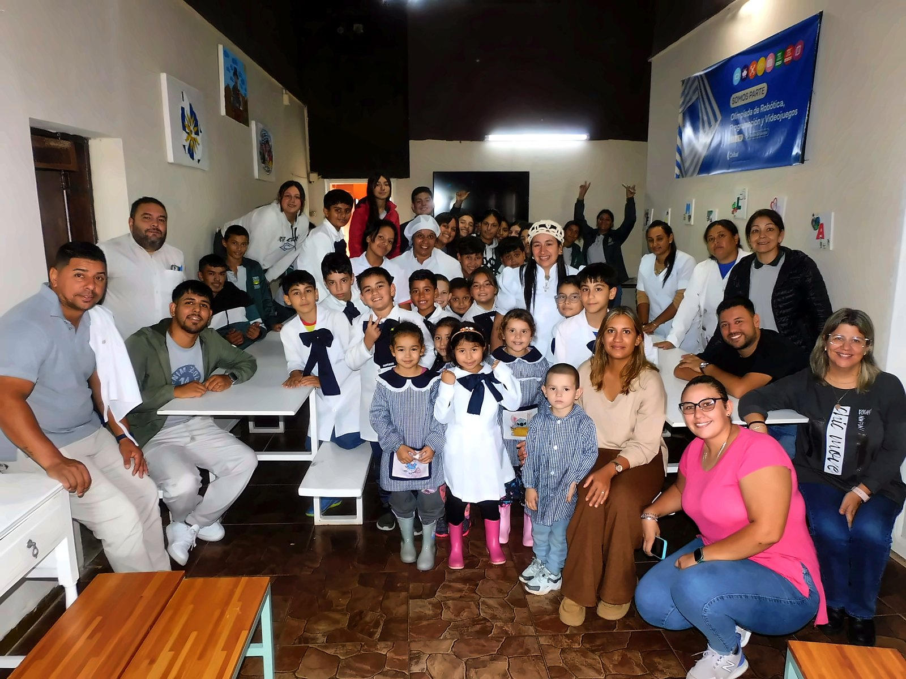
Foto: CEI Javier de Viana
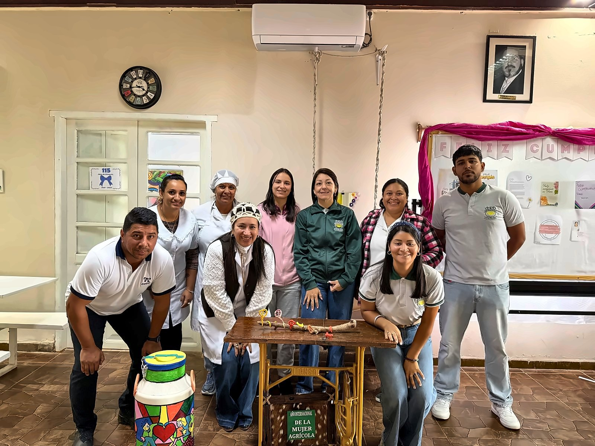
Foto: CEI Javier de Viana
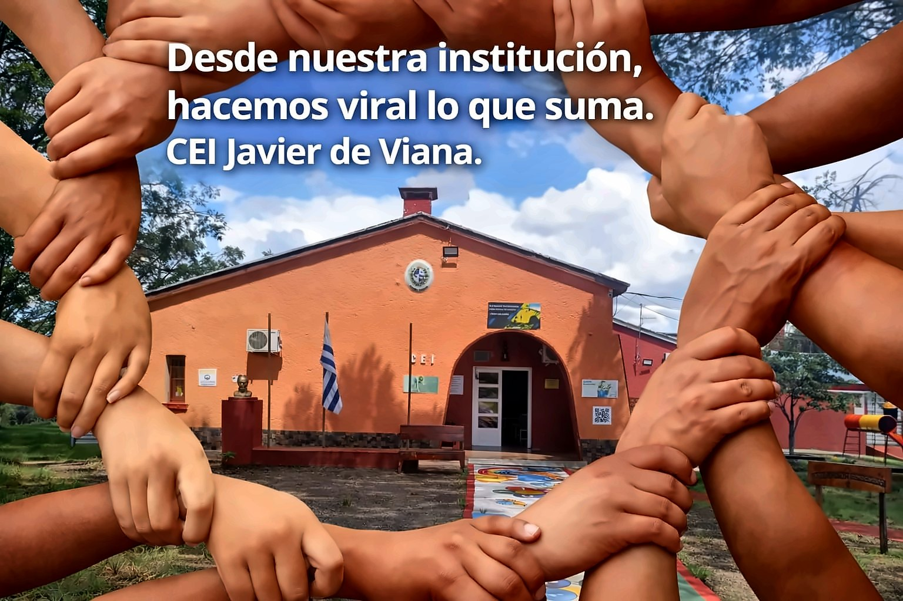
Foto: CEI Javier de Viana
Foto: CEI Javier de Viana